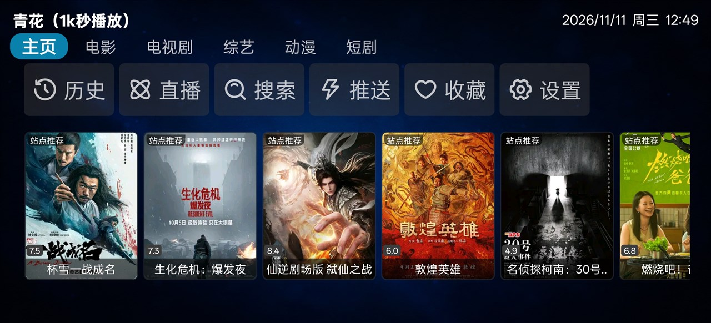
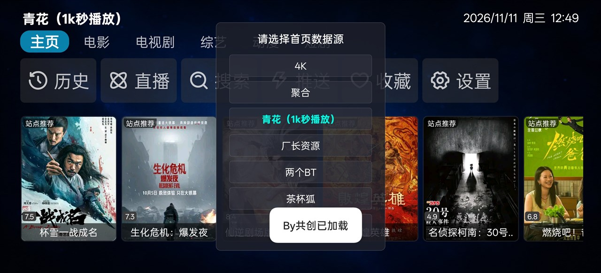
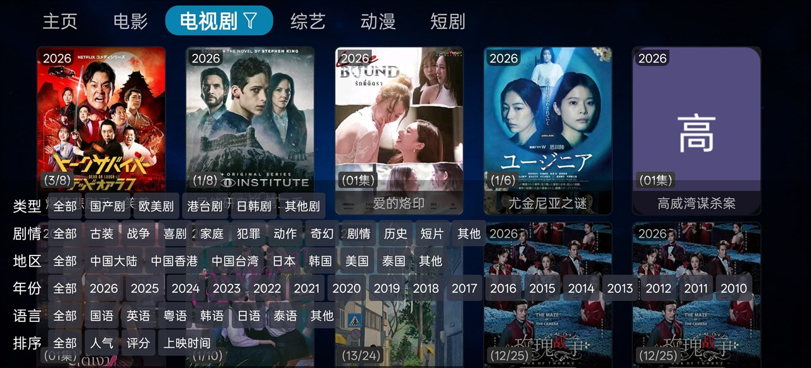
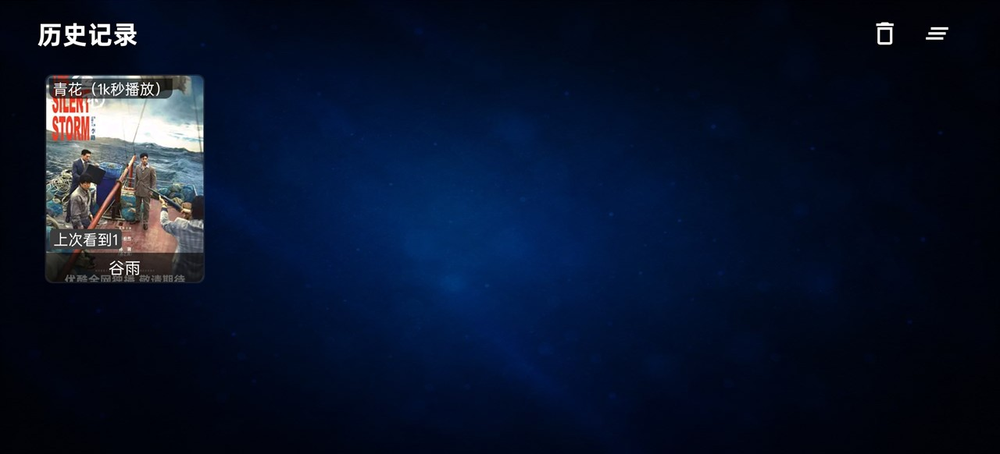
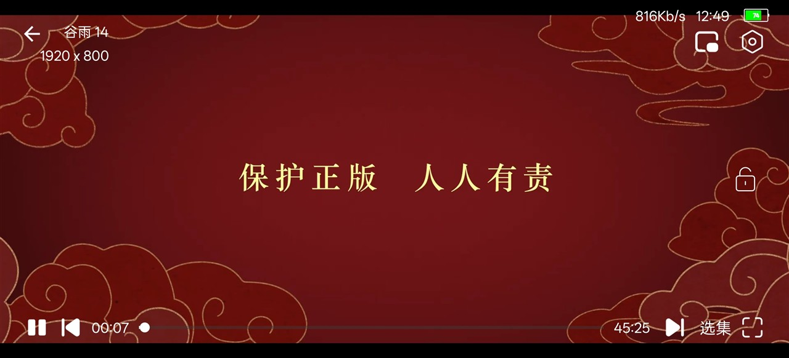

坐在沙发上，
遥控器点一点。
为大屏和遥控器重新设计：左右分栏、焦点高亮、一键换源。
按两下就进播放。
先看看样子。
以下为电视版真实运行截图（1920 × 1080 输出），点击可放大。





按客厅观看距离
和遥控器操作重新设计。
横屏大屏布局
1920 × 1080 基准，左右分栏结构，海报卡片加大，三米外也能看清标题。
- 左侧分类栏固定在屏幕边缘
- 海报卡片按屏幕比例放大
- 文字字号比手机版大 40%
遥控器焦点导航
每个可点元素都有明显高亮边框，方向键上下左右切换，确定键进入。
- 焦点框带描边和缩放效果
- 左右键快速翻页，上下键逐项移动
- 返回键逐层退出，不会误关应用
一键换源
播放卡顿时，播放页直接呼出线路列表，遥控器选一条继续播，不用退出重进。
- 播放页内呼出线路和剧集面板
- 自动跳过连不上的线路
- 记住上次选择的线路
大屏该有的，都在。
开机秒进
精简启动流程，跳过手机上那些权限弹窗，直接进入首页。
硬解 / 软解可切
老盒子解码能力弱，可以在设置里切换 IJK 软解或 Exo 硬解，适配不同设备。
体积更小
19.81 MB，比手机版小 13 MB，U 盘拷入、老设备安装都更快。
画面比例
16:9、4:3、填充、裁剪、原始比例，遥控器直接切换。
多站聚合搜索
一次输入片名，同时查询多个片源，结果按响应速度排序。
无广告无会员
没有开屏广告、没有弹窗、没有会员墙，打开就能看。
下载后可以用 SHA-256 校验。
36 秒，先看一遍。
手机版、电视版的真实界面，以及多线路、分类筛选、直播功能。
音乐：Kevin MacLeod - Carefree（CC BY 4.0）
线路公开透明，长期维护。
不藏源、不锁源，片源信息和代码逻辑都可以自己核对。
片源来自公开接口
所有影视资源均来自第三方公开的苹果CMS 采集接口，不包含自有片库、加密资源或付费内容。
爬虫代码可查
接口解析、请求构造、签名算法都在 GitHub 公开，可以自己查看、编译、部署，不用信任闭源黑盒。
持续跟进更新
采集站失效、接口变更时会同步修复。版本更新不带广告、不塞推广、不收集隐私。
github.com/gongchuang1089/CatVodSpider-standalone
三步装到电视上。
电视装 APK 比手机麻烦一点，按这个流程走。
用电脑下载 APK
在电脑上点上面的下载按钮，把 APK 保存到 U 盘根目录（方便找）。
U 盘插到电视
电视上打开「文件管理」或「媒体中心」，找到 U 盘里的 APK 文件。
允许安装并打开
提示「禁止安装未知来源应用」时，进设置允许当前文件管理器安装，然后完成安装。
电视版常见问题。
电视上找不到 APK 文件？
提示「应用未安装」或「解析包出错」？
遥控器按了没反应？
老盒子播放卡顿怎么办？
能用手机遥控电视吗？
⚠ 版权投诉与内容删除
本应用不存储、不传播任何影视文件，仅作为第三方公开接口的播放工具。应用内所有片源均来自互联网公开信息，版权归原站点所有。
如果您是版权方或内容所有者，认为本应用展示的内容侵犯了您的合法权益，请通过以下方式联系我们，我们会在 24 小时内 处理并移除相关内容或停止分发：
邮箱：gongchuang666@outlook.com
备用：github.com/gongchuang1089（提 Issue 或私信）
投诉时请提供：① 权利证明（著作权登记证书 / 授权文件）② 具体侵权内容的位置或截图 ③ 联系方式。我们承诺在收到有效通知后 24 小时内响应。